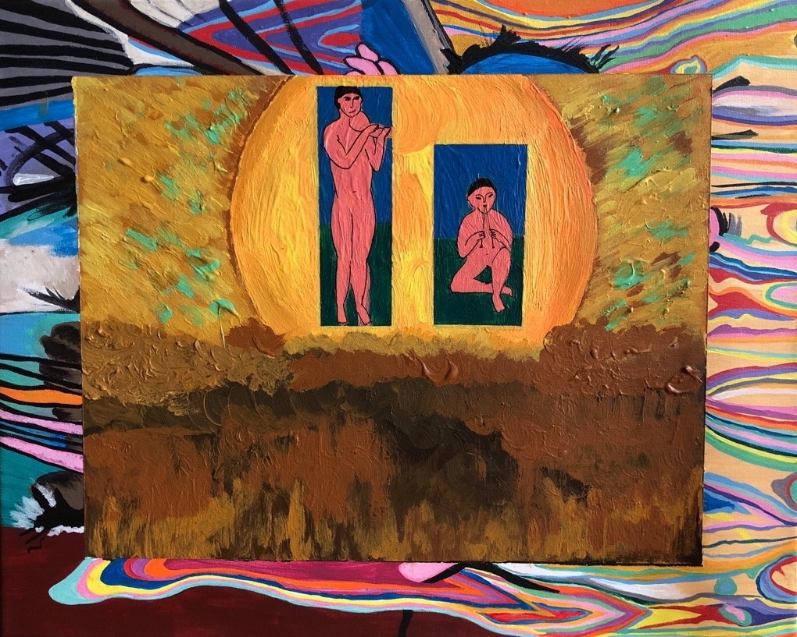

Psychedelic Sunset

Psychedelic Sunset is a depiction of people playing instruments with a sunset in the background. This is my own personal rendition of Matisse, Van Gogh, and Dunham to create an almost psychedelic blend. This piece puts Matisse’s artistic figures into a colorful, almost transcendent world outside of his simpler style.
This was created with acrylic paints [18x24].
Psychedelic Sunset is a depiction of people playing instruments with a sunset in the background. This is my own personal rendition of Matisse, Van Gogh, and Dunham to create an almost psychedelic blend. This piece puts Matisse’s artistic figures into a colorful, almost transcendent world outside of his simpler style.
This was created with acrylic paints [18x24].
Polymorphism

This is now a break line because I'm smart. This piece uses different colored squares and a subtle outline to create my own colorful perspective of leaves. A color is never repeated within the squares, emphasizing the uniqueness of each leaf. This can be related to the concept of polymorphism, where genetic variation occurs.
This was created with acrylic paints [18x24].